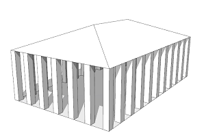

import
Syntax
import id : filePath
import id ( styleId, ... , styleId ) : filePath
import id : filePath ( attrId, ... , attrId )
import id : filePath ( )
import id : filePath ( attrId = expression, ... , attrId = expression )
import id : filePath ( extensionId --> operations, ... , extensionId --> operations )
Parameters
- id (identifier)
Unique prefix for imported rules, attributes and functions. - filePath (string)
Absolute or relative path to a CGA rule file (e.g. "file.cga"). See Asset Search for details about the supported syntax. - styleId (identifier)
Style to import. - attrId (identifier)
Attribute to protect or override. - expression (float, string, bool, float[], string[], bool[])
Attribute value. - extensionId (identifier)
Extension rule to override. - operations
A sequence of shape operations to execute.
Description
Import and reference rule files (Syntax 1 and 2)
Rule files can be imported by the import keyword. Importing a rule file makes all rules, attributes and functions of the imported rule file available in the importing rule file prefixed by id. In the following example main.cga imports the rule file imp.cga. The rule Lot references the rule Lot of imp.cga using the prefix identifier imp.
// main.cga import imp : "imp.cga" Lot --> imp.Lot
// imp.cga Lot --> extrude(10)
If the imported rule file contains multiple styles, by default all styles are imported and visible in the style manager. In order to limit the styles available in an importing rule file, the set of imported styles can be specified by enumerating the imported styles in parenthesis after the import id. In the following example the extrusion will be of height 20.
// main.cga import imp ( mystyle ) : "imp.cga" Lot --> imp.Lot
// imp.cga Lot --> extrude(10) style mystyle Lot --> extrude(20)
Imports can be annotated to control their attribute presentation in the inspector. See Annotations.
Attribute and rule override
Attribute redefinition by propagation
By default, attribute values from an importing rule file are propagated to the imported rule file. In the following example the extrusion height in imp.cga is specifed by the attribute height. If imp.cga is used stand-alone, the extrusion will be of height 10. If imp.cga is imported, height will potentially have a different value. In main.cga an attribute height is defined which potentially overrides the same attribute in imported rule files. Because an attribute height is also defined in imp.cga the value is propagated and the extrusion will be of height 20.
// main.cga import imp : "imp.cga" attr height = 20 Lot --> imp.Lot
// imp.cga attr height = 10 // set to 20 Lot --> extrude(height)
Attribute protection (Syntax 3 and 4)
In order to disable this default behavior (e.g. because an attribute in an imported rule file has the same name but a different semantic and should therefore not be overwritten), the attributes in an imported rule file can be protected by enumerating them after filePath in the importing rule file.
// main.cga import imp : "imp.cga" ( height ) attr height = 20 Lot --> imp.Lot
// imp.cga attr height = 10 // not changed Lot --> extrude(height)
Using empty parentheses conveniently protects all imported attributes.
// main.cga import imp : "imp.cga" ( ) attr height = 20 Lot --> imp.Lot
// imp.cga attr height = 10 // not changed Lot --> extrude(height)
Explicit attribute and rule override (Syntax 5 and 6)
Instead of using attribute propagation, an importing rule file can specify a new value for an imported attribute by redefining the attribute explicitly inside the import statement. The right-hand side expression is evaluated in the scope of the importing rule file.
// main.cga import imp:"imp.cga" ( height = 20 ) Lot --> imp.Lot
// imp.cga attr height = 10 // set to 20 Lot --> extrude(height)
Similarly to attributes, rules can be redefined with a sequence of operations which is evaluated in the scope of the importing rule file. The redefined rule in the imported rule file must be an extension rule. In the following example a gable roof is replaced with a hip roof which is put on top of the extruded geometry.
// main.cga import imp : "imp.cga" ( Roof --> roofHip(30) ) Lot --> imp.Lot
// imp.cga attr height = 10 Lot --> extrude(height) comp(f) { top = Roof | side = Side. } extension Roof --> roofGable(30)Within operations any operation, any rule in the current rule file and start rules of imported rule files can be used. Another example is given below.
Attribute propagation and explicit overrides only redefine attributes and rules in the Default style.
Setting the attribute source of an imported attribute in the inspector to something else than "Rule default" will disable any redefining behavior for that attribute and the value will be taken from the designated source instead.
Dynamic imports
Dynamic attribute and rule override
Attributes and rules can also be redefined dynamically at the time of rule invocation. In the following example the static import statement does not redefine height. The redefinition of height only happens for the invocation of imp.Lot.
// main.cga import imp : "imp.cga" Lot --> imp( height = 20 ).Lot
// imp.cga attr height = 10 // set to 20 Lot --> extrude(height) comp(f) { top = Roof | side = Side. } extension Roof --> roofGable(30)Any explicit attribute or rule override or attribute propagation of the static import will be considered for the dynamic import. Existing overrides can be redefined again. In the following example both the extrusion height and the Roof rule are redefined in the static import. The dynamic import redefines height again and takes over the Roof override from the static import.
// main.cga import imp : "imp.cga"( height = 20, Roof --> roofHip(30) ) Lot --> imp( height = 30 ).Lot// imp.cga attr height = 10 // set to 30 Lot --> extrude(height) comp(f) { top = Roof | side = Side. } extension Roof --> roofGable(30)Attribute and rule overrides can be configured with at-runtime evaluated values. In the following example the static import imp is used several times where the attribute height is redefined with a randomly evaluated value.
// main.cga import imp : "imp.cga" Lot --> split(x) { ~10 : Building(5) }* Building(h) --> imp( height = h + rand(10) ).Lot// imp.cga attr height = 10 // set to 5+rand Lot --> extrude(height) comp(f) { top = Roof | side = Side. } Roof --> roofGable(30)
Re-initialization of attributes
Dynamic imports re-initialize all attributes of the imported ruleset at the time of rule invocation. In the following example the value of angle is dependent on the value of height. For each invocation of imp.Lot the attribute angle is re-evaluated wrt. the new value of height. Another example is given below.
// main.cga import imp : "imp.cga" Lot --> split(x) { ~10 : Building(5) }* Building(h) --> imp( height = h + rand(10) ).Lot// imp.cga attr height = 10 attr angle = case height > 10 : 0 else : 30 Lot --> extrude(height) comp(f) { top = Roof | side = Side. } Roof --> roofGable(angle)The following example uses an "empty" ruleset initialization. Any preceeding change to imported attributes will not be effective for the dynamic import because all attributes are re-initialized from the static import.
// main.cga import imp : "imp.cga" Lot --> set(imp.height, 20) imp( ).Lot// imp.cga attr height = 10 // not changed Lot --> extrude(height)
For dynamic imports, attributes are redefined in any case, independent from the current attribute source of the imported attribute in the inspector.
Related
Examples
Extension rule override
This example illustrates how extension rules can be redefined in an import statement and how start rules can be used in overrides.
Simple temple model
In the following rule file temple.cga the start rule Temple generates a simple temple model. Each column is generated by the extension rule Column. The roof is generated by the extension rule Roof. The height of the columns is set by the attribute columnHeight. Both extension rules and attributes can be redefined in import statements in order to customize the temple model.
// temple.cga
attr columnHeight = 12
start Temple --> CreateColumns
CreateRoof
extension Column --> primitiveCube
extension Roof --> roofHip(22)
const columnWidth = columnHeight/9
CreateColumns -->
offset(-columnWidth, border)
comp(f) { all :
extrude(columnHeight)
split(x) {
{ ~columnWidth : Column | ~2*columnWidth : NIL }* | ~columnWidth : NIL
}
}
CreateRoof --> t(0,columnHeight,0) Roof
The resulting model looks like this:
Customized columns
In the following rule files corinthianColumn.cga and ionicColumn.cga the rules CorinthianColumn and IonicColumn generate columns in a different manner as the default behavior defined by the rule Column in temple.cga. Both CorinthianColumn and IonicColumn are defined as a start rule and can therefore be used in rule overrides of import statements.
// corinthianColumn.cga
start CorinthianColumn --> split(y) { ~1 : Shaft | '0.1 : Base }
Base --> primitiveCube
Shaft --> s('0.8, '1,'0.8) center(xz) primitiveCube
// ionicColumn.cga
start IonicColumn --> split(y) { '0.1: Base | ~1 : Shaft | '0.1: Base }
Base --> primitiveCube
Shaft --> primitiveCylinder
Customized temple model
The following rule file myTemple.cga imports the rule file temple.cga using the prefix identifier CorinthianTemple and the prefix identifier IonicTemple. In each import statement the attribute columnHeight and extension rules are redefined. The redifinitions of Column invoke the start rules of corinthianColumn.cga and ionicColumn.cga respectively. The redefinition of the Roof rule sets a color and invokes the rule MyRoof in the current ruleset (in the same rule file). Within the Init rule the start rule of temple.cga is invoked. Depending on which prefix identifier is used a different temple model is generated.
// myTemple.cga
import CorinthianColumn : "corinthianColumn.cga"
import CorinthianTemple : "temple.cga" (
columnHeight = 8,
Column --> CorinthianColumn.start,
Roof --> color(1,0.5,0.5) MyRoof )
import IonicColumn : "ionicColumn.cga"
import IonicTemple : "temple.cga" (
columnHeight = 16,
Column --> IonicColumn.start,
Roof --> color(1,0.5,0) MyRoof )
@Enum("Corinthian", "Ionic")
attr type = "Corinthian"
Init --> case type == "Corinthian" : CorinthianTemple.start
else : IonicTemple.start
MyRoof --> roofGable(22)
The resulting models look like this:
|
|
 |
Using plant loader with dynamic import
In the following example ESRI.lib's plant loader is used to randomly insert three different trees. The attribute plant.Name is redefined in a static import. For each customization of the plant loader we use a separate import statement. The dimensions of a tree are defined by attributes plant.Height and plant.Radius and automatically adjusted in Plant_Loader.cga according to plant.Name.
import bay : "/ESRI.lib/rules/Plants/Plant_Loader.cga"
( Name = "California Bay" )
import cedar : "/ESRI.lib/rules/Plants/Plant_Loader.cga"
( Name = "California Incense Cedar" )
import walnut : "/ESRI.lib/rules/Plants/Plant_Loader.cga"
( Name = "California Walnut" )
Lot --> scatter(surface, 10, uniform) { Plant }
Plant --> 33% : bay.Generate
33% : cedar.Generate
else : walnut.Generate
|
Instead of defining several static imports, the attribute plant.Name can be redefined in a dynamic import. This provides the flexibilty to set values dynamically at runtime. All dependent attributes such as plant.Height and plant.Radius are re-initialized depending on plant.Name resulting in correct tree dimensions.
import plant:"/ESRI.lib/rules/Plants/Plant_Loader.cga"
getName = 33% : "California Bay"
33% : "California Incense Cedar"
else : "California Walnut"
Lot --> scatter(surface, 10, uniform) { Plant }
Plant --> plant( Name = getName ).Generate
|
Copyright ©2008-2025 Esri R&D Center Zurich. All rights reserved.